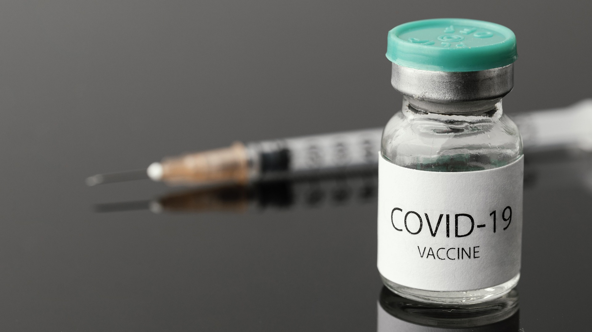
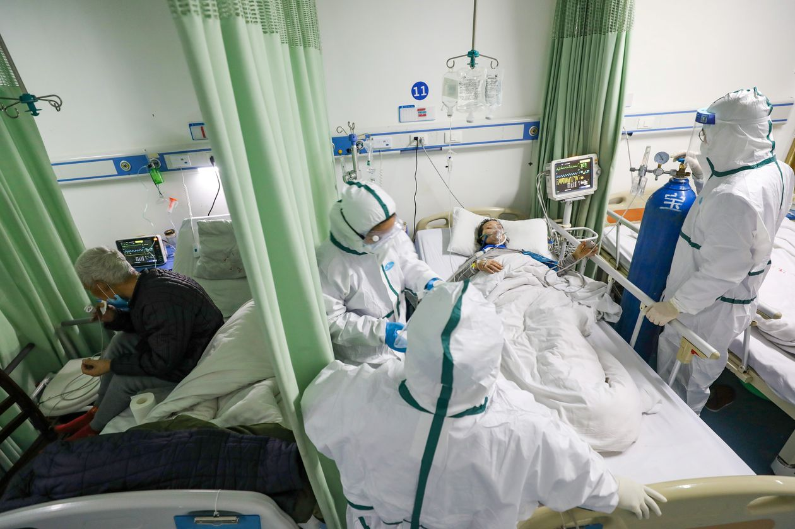

Why we are here?
The second wave of covid-19 made situation very panic.
We are here to help you on checking the availibilty of beds and availibilty of vaccines in different cities of gujarat.
We make the work easy for you. Now you can get hospital with proper information and you don't have to panic and run everywhere.
Just use our services and make yourself aware of the things. That can help you a lot better.
Let's fight together and win over this pandemic.
Give a look on our services.
Our services:
Check availibility of beds.

We are providing help for finding available beds in different hospital of Gujarat.
Check availibility of vaccines.

We are providing help for tracking available vaccines in different centers of Gujarat.
Treatment stages of covid.

We are providing help for understanding different stages of covid and treatment instructions.
Some useful information
- COVID-19 is a new infectious disease caused by the SARS-CoV-2 virus.
- The key symptoms of COVID-19 are a fever, dry cough, tiredness and loss of taste or smell.
- COVID-19 affects different people in different ways. Some people do not have any symptoms and may not even know they have the virus, while others get seriously ill and need hospital care.
- Physical distancing, wearing a face mask around other people and frequent handwashing are some of the best ways to prevent COVID-19.
- If you think you have symptoms of COVID-19, stay at home and call your local health authority. They will tell you what to do next.
- More at: Covid-19 Myths and Facts